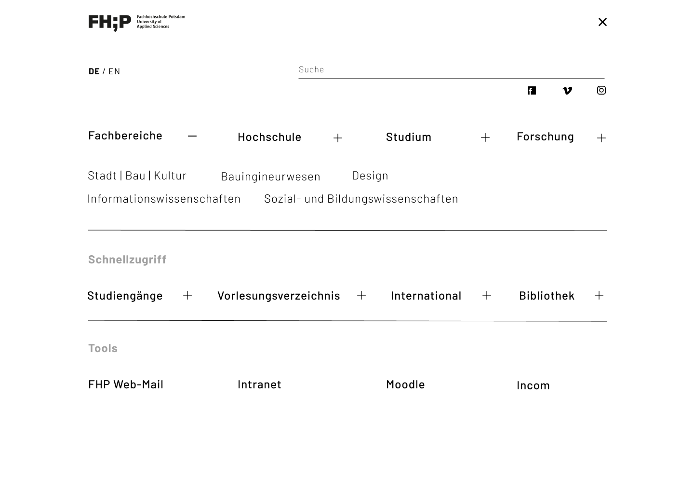

The course framework presented a unique opportunity to conduct a comprehensive case study for redesigning the FH Potsdam website. Rather than aiming for a fully functional prototype encompassing every detail of functions and applications, the focus was on a meticulous exploration of a specific aspect of the FH Potsdam website.
In our concept, we focused strongly on the implementation of the departments, as we saw this as an opportunity to be able to assign specific degree programme and department information more clearly in order to avoid the frequent "duplication of subpages". This also makes it easier for users to understand where they are on the site and how the respective departments differ from each other both visually and in terms of content.
The landing page prominently features high-resolution imagery that encapsulates the vibrant tapestry of daily life within the university. Employing a color-coded scheme, the design seamlessly delineates various departments, enhancing navigability and user experience. The dissemination of general news adopts a contemporary and organized approach, manifested through a refined masonry-style layout meticulously distributed across the page. This amalgamation of visual appeal and structural precision aims to provide a polished and professional gateway to the university's online presence.
In our redesign approach, we've implemented a distinctive color scheme to enhance the user experience on our website. Each department is now assigned a unique color, streamlining the identification of department-specific content for users. This strategic use of colors not only creates a visually appealing design but also provides a clear and intuitive separation between department-specific content and broader university details. The redesign aims to improve navigation, ensuring that users can effortlessly explore and locate information across the entire website with ease.
The menu can always be accessed via a hamburger menu to navigate through the 4 main topics. There is also quick access to the most important content for students and prospective students as well as access to all internal university tools.
